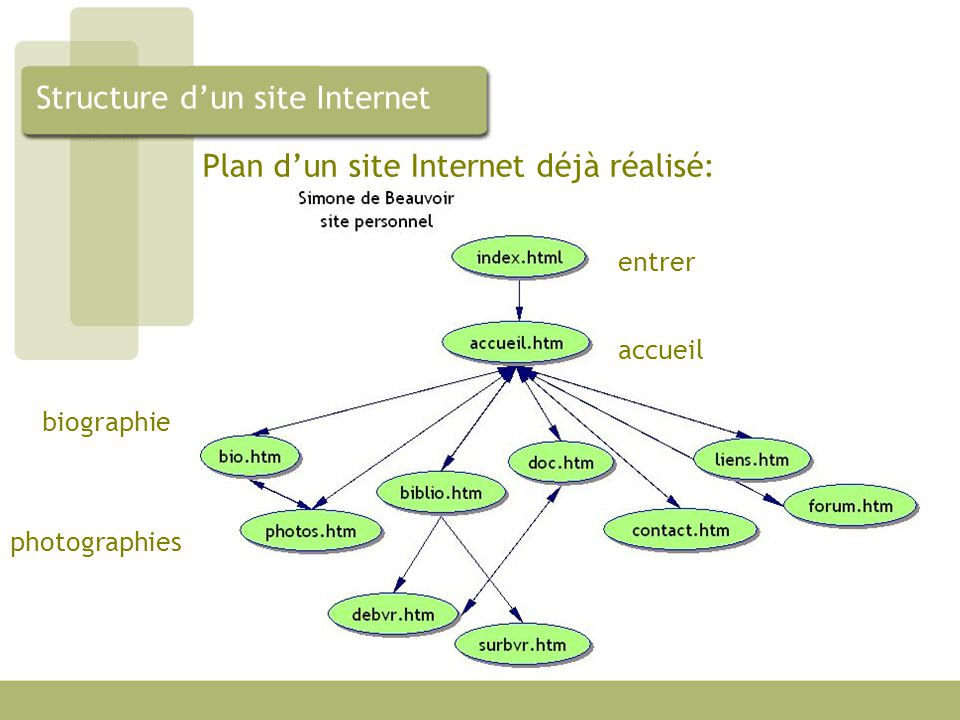

Un moteur de recherche est une application web qui permet de trouver une ressource à partir d'une requête d'un utilisateur. Cette recherche se fait généralement par des mots clés.
Google, DuckDuckGo, Bing, Yahoo, Qwant
Les moteurs de recherche explore le web grâce à des robots appelés spiders ou crawlers. Lors de cette phase d'exploration et de collecte d'informations les pages sont reliées les unes aux autres grâce aux liens hypertextes. On obtient ainsi un graphe. Les données collectées vont être stocké dans un index dans lequel enregistre des mots et chacun de ces mots sont associés à un ensemble de pages qui le contiennent, ainsi que l'importance du mot sur ces pages.

La popularité d'une page Web dépend de plusieurs facteurs :
- le nombre de pages qui ont des liens vers cette page ;
- le nombre de fois que les utilisateurs choisissent cette page en réponse à une requête de recherche ;
- l'achat de mots-clés au moteur de recherche par un site afin que ses pages soient mieux classées.
les moteurs de recherche combinent ces facteurs selon des formules qui sont gardées secrêtes et qui changent
régulièrement. C'est pourquoi les réponses à une même requête varient d'un moteur à l'autre.